The main idea of the finite element method consists in dividing the continuum — a three dimensional one as well as a plate/shell or beam can be considered — into an assembly of small elementary entities called elements. Each element is obtained by connecting the nodes and each node is associated with a set of generalized displacements and forces, depending on the kind of element.
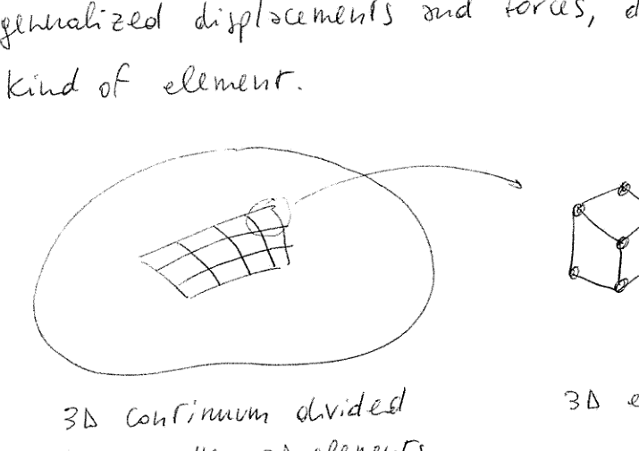
Figure 1.1: 3D continuum divided into smaller 3D elements (left) and a single 3D element with nodes (right)
Considering the example in the figure, the element is composed of 8 nodes; each node is associated with three displacement components and three nodal force components. The relation between nodal forces and displacement is obtained by referring to the FE theoretical framework discussed in these notes.
The idea of dividing a structure into smaller elementary portions has been already introduced when analyzing systems of trusses and beams.
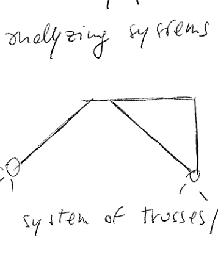
Figure 1.2: System of trusses/beams
In this case the procedure for solving the linear static problem consists in assembling the governing equations starting from the force-displacement relation available for each element. It can be useful to highlight that the force-displacement relation was derived by application of the PCVW (Principle of Complementary Virtual Work).
How can the approach be extended to a generic 2D and 3D case? How can the procedure be developed in a fully consistent displacement-based approach?
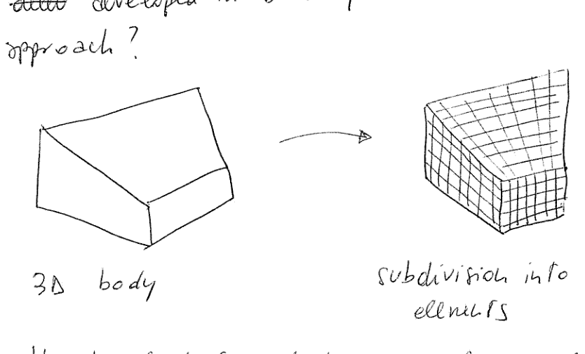
Figure 1.3: 3D body subdivision into small 3D elements
How to find force-displacement relations for the elements? How to assemble the contributions?
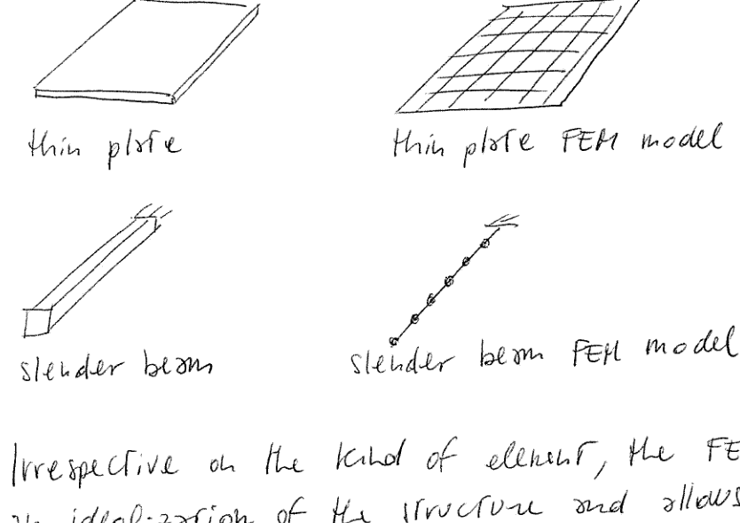
Figure 1.4: Thin plate and slender beam with their FEM model representations
Irrespective of the kind of element, the FEM operates an idealization of the structure and allows to seek for an approximate solution, exactly as in the case of the Ritz and Galerkin methods; in a certain sense, the FEM can be easily seen as a Ritz-like approach where the trial functions are defined at local level (and not at global level as in Ritz).
1.1 FEM Procedure Steps
To summarize, the method can be conceptually divided into the following steps:
Subdivision of the structure into small portions. This operation is the generation of the mesh, where:
mesh = nodes + elements
The various elements composing the mesh are connected to each other in correspondence of the nodes.
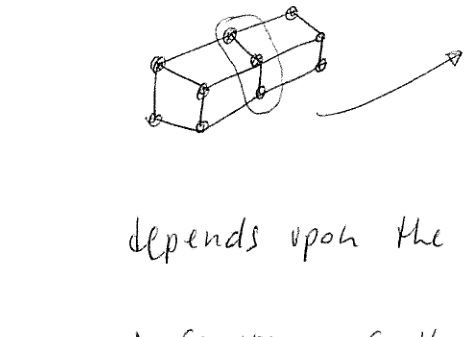
Figure 1.5: The compatibility is enforced at nodal level. Along the frontier it is not necessarily satisfied (this depends upon the choice of the shape functions).
Definition of the elements to be used. The elements could be 3D/2D/1D, depending on the modelling choices of the analyst. In addition, once the dimensionality of the element is defined, one must choose which type of element to consider in terms of element formulation. Linear interpolating functions? Or quadratic? Or cubic?
FEM codes typically offer a large library of elements that one should choose based on the needs of the analysis, its peculiarities, the experience with the code.
Formulation of the equilibrium conditions (if operating in a displacement-based approach) or, to a more general extent, of the stationarity condition of the variational principle adopted.
For the scopes of this course the variational formulation is always intended in terms of Principle of Virtual Works or Total Potential Energy. Other formulations are clearly possible.
Solution of the discrete equations obtained from the previous step.
As in the case of the method of Ritz, the FEM allows to transform the continuum problem — which is governed by Partial Differential Equations (PDE) — into an algebraic problem.
In the context of a displacement-based formulation, the discrete equations express the equilibrium conditions at the nodes of the mesh.
It can be observed that the solution of the discrete equations leads to the satisfaction of the equilibrium in a weak sense. The solution is indeed approximate, and the equilibrium is not fulfilled locally.
Evaluation of the displacement field (using the shape functions) and recovery of stress/strain field.
Once the nodal displacements (i.e. the unknowns of the problem) are known, the displacement field can be reconstructed in the overall domain by making use of the shape functions to interpolate the nodal values.
2. Formulation for the Linear Static Case Using 3D Elements
Consider, as a starting point, the case of a 3D body (this is, as a matter of fact, the simplest case as no kinematic models are implied).
2.1 Principle of Virtual Works
The Principle of Virtual Works is written as:
\[\int_V \delta \underline{\underline{\varepsilon}} : \underline{\underline{\sigma}} \, dV = \int_V \delta \underline{S} \cdot \underline{f} \, dV + \int_A \delta \underline{S} \cdot \underline{f}^A \, dA + \sum_{i=1}^{N} \delta \underline{S}_i \cdot \underline{F}_i^c\]
where \(\underline{\underline{D}}\) is a differential operator collecting the derivatives with respect to \(x, y, z\).
2.4 The B Matrix
Introducing now the approximation of the displacement field as \(\underline{S} = \underline{\underline{N}} \underline{u}\), it is possible to express the strains as function of the nodal displacements:
\(\underline{\underline{B}}\) is the matrix collecting the derivatives of the shape functions.
2.5 Constitutive Law
To express the PVW as function of the nodal displacements it is necessary to introduce the constitutive law. In the linear hyperelastic case it can be written as:
\(\underline{\underline{K}}_e\): stiffness matrix of the element
\(\underline{F}_e^V, \underline{F}_e^A, \underline{F}_i^C\): volume, surface and concentrated forces associated with the element \(e\)
2.8 Global Assembly
The assembly procedure consists in expanding the contribution of each single element at global equation level. Formally one can write this operation as:
It is important to recall that the assembly of the equations is never performed using the Boolean matrices \(\underline{\underline{\Omega}}_e\), but is done by directly accumulating the contributions of the elements according to the positions specified by the vectors of pointers.
where \(\mathrm{A}\) is the operator indicating the assembly of the equations.
3. General Remarks
3.1 Stiffness Matrix Properties
The stiffness matrix of the structure is, in general, singular. As no constraints have been introduced so far, rigid body motions are possible.
Regarding the boundary conditions it is thus necessary to impose the essential ones. This operation can be conducted by removing rows and columns associated with the constrained dofs.
Note that natural conditions do not need to be enforced. They are satisfied in a weak-form sense, as they are included in the variational principle.
4. Stiffness Matrix of Some Elements in Physical Coordinates
To clarify the main aspects of the FE procedure, it is useful to discuss how to derive the stiffness matrix for some simple finite elements.
The operation is conducted here in the so-called physical coordinates, which are the coordinates where the problem is defined (an alternative procedure, discussed later, is based on the transformation of the problem in the "computational" domain).
The shape functions can be constructed by considering simple polynomial expansions (in FE, as opposed to Ritz, low order polynomials are generally used, thus the ill-conditioning issues associated with high-order functions are not generally encountered).
4.1 The Pascal Triangle
To this aim, the Pascal Triangle can be taken as a memo for selecting the basis:
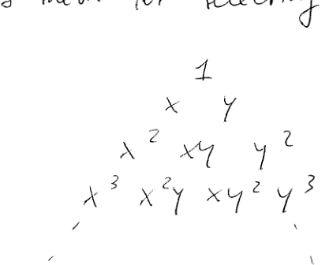
Figure 4.1: Pascal Triangle showing polynomial term selection for finite element basis functions
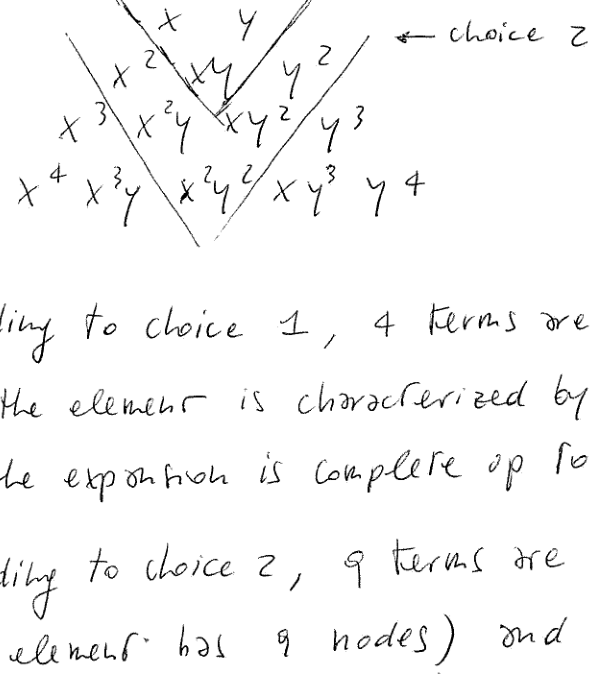
Figure 4.2: Pascal Triangle with choice annotations showing term selection for 2D element formulation
According to choice 1, 4 terms are considered (so the element is characterized by 4 nodes) and the expansion is complete up to the 1st order.
According to choice 2, 9 terms are considered (the element has 9 nodes) and the expansion is complete up to the 2nd order.
Definition: Completeness
Completeness of the expansion is achieved up to the order \(N\) if all of the terms of order \(N\) are retained as part of the expansion.
In the 1D case one can simply consider a polynomial expansion in the form:
\[1 \quad x \quad x^2 \quad \cdots \quad x^N\]
4.2 Linear Bar Element
Consider a two-node bar element:
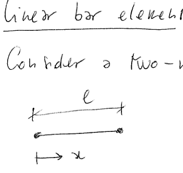
Figure 4.3: Two-node linear bar element with length \(\ell\) and coordinate system
How to construct an interpolating scheme such that \(u = \underline{\underline{N}} \underline{u}\)?
As the element is made of two nodes, the expansion is taken as:
\[\underline{\underline{X}} = \begin{bmatrix} 1 & x \end{bmatrix}\]
And the displacement \(u\) is approximated as:
\[u = \begin{bmatrix} 1 & x \end{bmatrix} \begin{Bmatrix} \alpha_1 \\ \alpha_2 \end{Bmatrix} = \alpha_1 + \alpha_2 x = \underline{\underline{X}} \underline{\alpha}\]
(This is the kind of strategy used in Ritz-like approaches.)
In FE the idea is that of considering the nodal displacements as unknowns instead of the Lagrangian coordinates \(\underline{\alpha}\).
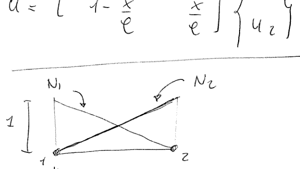
Figure 4.4: Shape functions \(N_1\) and \(N_2\) for the linear bar element
The shape functions are then linear functions of the coordinate \(x\). They are equal to 1 in correspondence of the associated node and zero on the other node:
\(N_1 = 0\) at \(x = x_2\); \(N_1 = 1\) at \(x = x_1\)
\(N_2 = 0\) at \(x = x_1\); \(N_2 = 1\) at \(x = x_2\)
Stiffness Matrix Derivation
The stiffness matrix of the single element is available as:
\[\underline{\underline{K}} = \int_V \underline{\underline{B}}^T E \underline{\underline{B}} \, dV = EA \int_0^{\ell} \underline{\underline{B}}^T \underline{\underline{B}} \, dx\]
One possibility for refining the accuracy of the predictions consists in increasing the order of the interpolation functions. Quadratic elements are widely used and an example is illustrated here with regard to a bar element.
The element is now made by three nodes, two external and one internal:
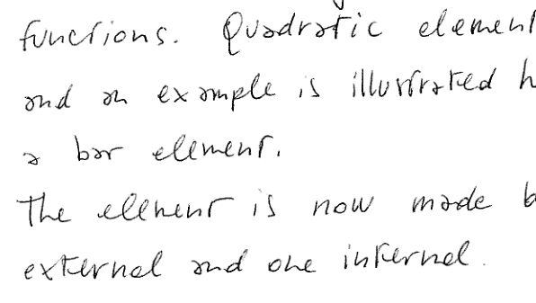
Figure 4.5: Three-node quadratic bar element showing node positions
The expansion, due to the additional dof, is taken as:
Any set of external loads has to be transformed into a set of nodal, discrete forces. As a matter of fact, the FEM discretization transforms the equilibrium conditions into a set of discrete equations expressing the equilibrium at nodal level. Accordingly, the forces (external loads) have to be translated into a set of nodal loads.
In the case of concentrated loads, which have to be applied in correspondence of nodes, this operation is clearly not necessary.
For distributed loads the operation is conducted by projecting the external loads over the shape functions of the FEM approximation.
5.1 Linear Bar Element with Distributed Load
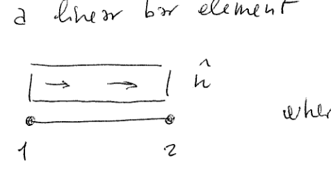
Figure 5.1: Linear bar element with distributed load \(\hat{n}\) and transformation to nodal forces
The discretization is automatically available after writing the external virtual work:
The load is then transformed into two nodal forces of magnitude \(\hat{n} \ell/2\).
While this result is quite intuitive (due to the simplicity of the load and the element formulation) the approach is of general validity and can be considered for transforming any set of load into the corresponding conformal loads.
5.2 Quadratic Bar Element with Distributed Load
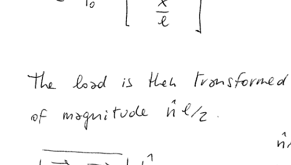
Figure 5.2: Quadratic bar element with distributed load
How to "translate" the distributed load into the conformal nodal forces?
Again, the external virtual work can be written as:
Consider now a 2D element. For simplicity a membrane element (zero bending stiffness) is considered, so that no kinematic models need to be introduced and the number of dofs is restricted to the membrane ones.
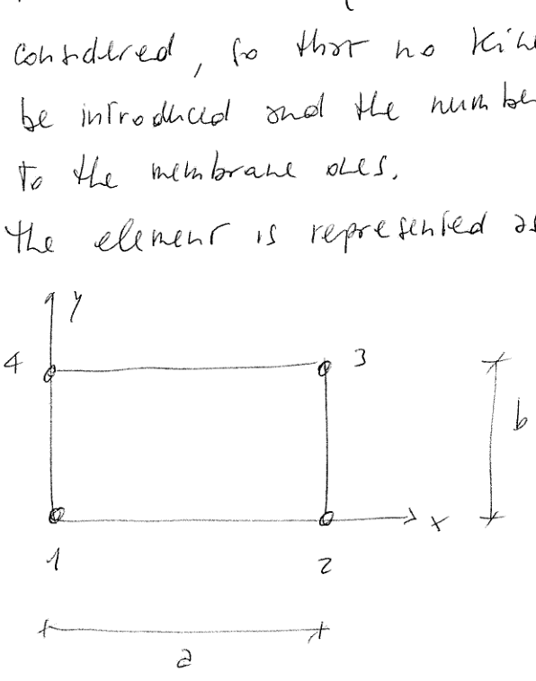
Figure 6.1: Rectangular bilinear membrane element with four nodes and coordinate system
The element is made of 4 nodes, so that a linear interpolation is adopted along the directions \(x\) and \(y\). Each node has two degrees of freedom, which are the displacements along \(x\) and \(y\).
6.1 Polynomial Basis Selection
Recalling the Pascal Triangle:
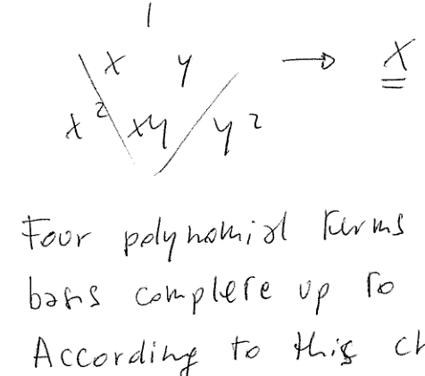
Figure 6.2: Pascal Triangle showing bilinear polynomial terms for 2D element
\[\underline{\underline{X}} = \begin{bmatrix} 1 & x & y & xy \end{bmatrix}\]
Four polynomial terms are taken, leading to a basis complete up to the first order.
According to this choice, the displacement field is interpolated as:
\[u = \begin{bmatrix} 1 & x & y & xy \end{bmatrix} \begin{Bmatrix} \alpha_1 \\ \alpha_2 \\ \alpha_3 \\ \alpha_4 \end{Bmatrix}\]
\[v = \begin{bmatrix} 1 & x & y & xy \end{bmatrix} \begin{Bmatrix} \alpha_5 \\ \alpha_6 \\ \alpha_7 \\ \alpha_8 \end{Bmatrix}\]
or: \(u = \underline{\underline{X}} \underline{\alpha}_u\) and \(v = \underline{\underline{X}} \underline{\alpha}_v\)
6.2 Shape Functions Construction
The shape functions can be built as done in the 1D case:
Despite the simplicity of the approach for constructing the shape functions, this approach is quite inefficient as it demands for the evaluation of the trial functions element by element. Each element composing the structure is, in principle, associated with a different matrix \(\underline{\underline{A}}\) to be inverted.
This is one of the motivations for considering parametric elements, a class of finite elements where the shape functions are defined on a domain which is the same for all the elements: the computational domain.
7. Assembly of the Equations (and Compatibility Conditions)
The assembly procedure is conducted by summing up the individual (= of each element) contributions at global level. The operation is performed by placing the stiffness contributions of the elements in specific portions in the global stiffness matrix (by making use of the vectors of pointers).
Compatibility of the displacements at the common nodes is implicitly enforced when assembling the equations.
7.1 Two-Element Example
Consider the two-element FEM model below:
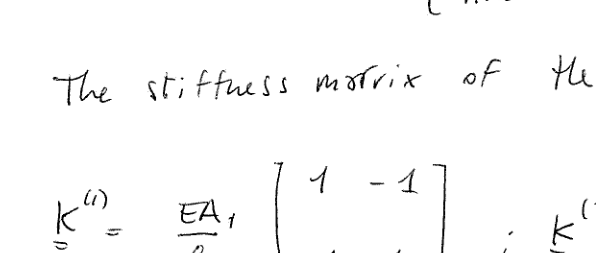
Figure 7.1: Two-element bar model with three nodes
The model is composed of two elements with two nodes (linear bar elements).
The stiffness matrix of the two elements reads:
\[\underline{\underline{K}}^{(1)} = \frac{EA_1}{\ell_1} \begin{bmatrix} 1 & -1 \\ -1 & 1 \end{bmatrix} \quad , \quad \underline{\underline{K}}^{(2)} = \frac{EA_2}{\ell_2} \begin{bmatrix} 1 & -1 \\ -1 & 1 \end{bmatrix}\]
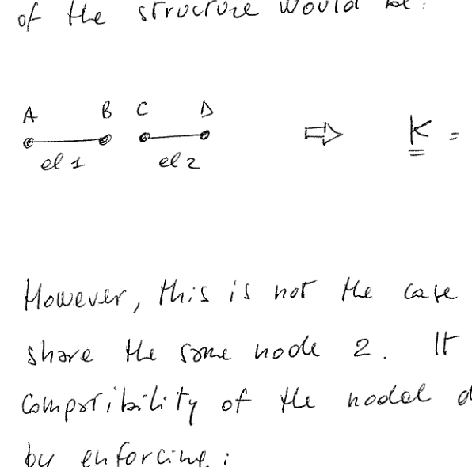
Figure 7.2: If the two elements are considered as separate entities, not connected each other in correspondence of the node 2, the assembled stiffness matrix would be block diagonal
However, this is not the case and the two elements share the same node 2. It follows that the compatibility of the nodal displacement is obtained by enforcing:
\[u_B = u_C\]
Note that this operation is particularly simple due to the fact that the unknowns of the problem are the displacements at the nodes. In the context of a Ritz based procedure, where the unknowns are the amplitudes of the trial functions, it is much more challenging to enforce the continuity of the displacements at the frontier.
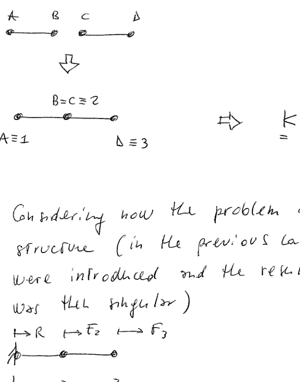
Figure 7.3: After imposing \(u_B = u_C\), the assembled stiffness matrix is obtained with overlapping contributions at the shared node
7.2 Constrained Structure
Considering now the problem of a constrained structure (in the previous case no constraints were introduced and the resulting stiffness matrix was then singular):
The compatibility condition to be enforced, at global equation level, regards the essential condition \(u_1 = 0\).
Again, this can be easily done as the prescribed displacement is associated with one single unknown of the problem, which is then removed from the set of solving equations.
(Note that the reaction force \(R\), which is an unknown of the problem, does not enter the final set of equations. If needed it can be evaluated once \(u_2\) and \(u_3\) are available.)
8. Boundary Conditions
Other strategies can be implemented for imposing the boundary conditions.
8.1 Lagrange Multipliers
The approach consists in "enriching" the variational statement by enforcing the constraint using Lagrange multipliers.
Assuming that the constraint is linear, i.e. it can be expressed in the generic form:
The result illustrates that the augmented system can be solved (\(\underline{\underline{K}}\) becomes non-singular as the constraint is accounted for by the Lagrange multiplier) and, obviously, the imposed boundary condition \(u_1 = 0\) is obtained as part of the solution.
It is interesting to note that the magnitude of the Lagrange multiplier \(\lambda\) is equal to the magnitude of the reaction force, in this case \(5 + 5 \text{ N} = 10 \text{ N}\).
8.2 Penalty Terms
Penalty formulations are commonly used in the context of Ritz-based procedure, as they facilitate the fulfillment of the boundary conditions (they make it possible the adoption of trial functions not respectful of the essential condition of the problem).
The same approach can be adopted in the context of finite element procedures.
The idea of a penalty approach consists in replacing the ideal constraint with an "artificial" spring with a very high stiffness value (in relation to the stiffnesses of the problem under investigation).
The ideal case is recovered when the artificial stiffness is infinite. In practice this value should be taken as high as possible, with an upper bound dictated by the possible onset of ill-conditioning of the stiffness matrix.
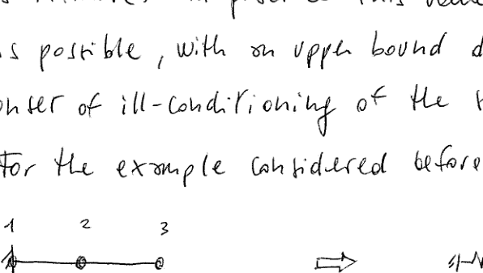
Figure 8.1: Two-element structure with penalty spring \(k_p\) showing stiffness modification for boundary conditions
The presence of the penalty stiffness determines the onset of an additional term to the strain energy in the form:
\[U_p = \frac{1}{2} k_p u_1^2\]
and so:
\[\Pi = \Pi_{old} + \frac{1}{2} k_p u_1^2\]
(with \(\Pi_{old}\) = potential energy of the system without penalty spring)
And so an additional contribution is obtained in the discrete equations, in this case in position (1,1). Indeed:
The results are very close to those obtained before. Note that the displacements are slightly higher as a finite amount of stiffness is now associated with the constraint of node 1.
As \(k_p\) is increased, the displacements tend asymptotically to the previous solution.
9. Parametric Formulation
The approach in physical coordinates is intuitive and can be seen, in a certain sense, as the direct transformation of the method of Ritz into a finite element counterpart. However three (at least) main issues are worth of discussion:
The procedure demands for the evaluation of the shape functions for any individual element composing the mesh.
The shape functions were obtained as: \(\underline{\underline{N}} = \underline{\underline{X}} \underline{\underline{A}}^{-1}\)
This operation has to be conducted for each element, which is a relatively costly operation.
Whenever the element is not regular (square/cube in 2D/3D), one should understand how to perform the integrals for the evaluation of the stiffness matrix.
In this sense, the approach outlined does not seem particularly adequate to handle distorted elements.
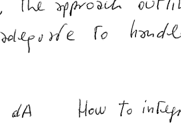
Figure 9.1: How to integrate the stiffness expression if the element is distorted?
The method does not apply, in a natural way, to the modelling of non-straight edges.
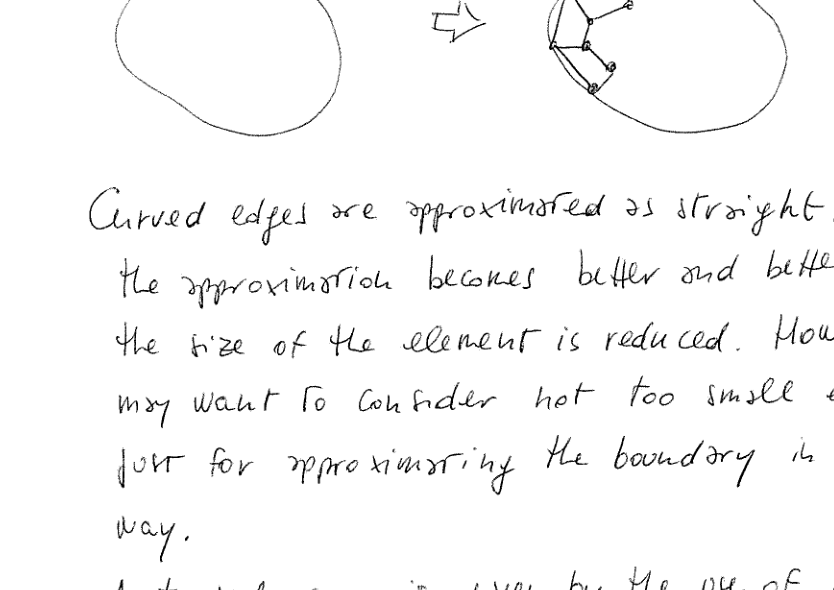
Figure 9.2: Curved edges are approximated as straight. The approximation becomes better as element size is reduced. Using high order elements (larger), the approximation of curved edges can be very poor.
9.1 The Idea of Parametric Formulation
The idea of the parametric formulation consists in operating a mapping from the physical domain into a reference (or computational) one. In other words the elements are transformed into a reference element which is equal to itself, irrespective of the shape of the element in the physical domain.
Figure 9.3: Isoparametric mapping illustration showing transformation from physical to computational domain for 1D, 2D, and 3D elements
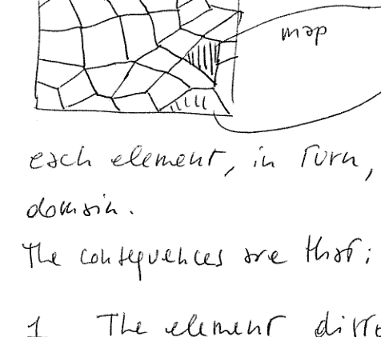
Figure 9.4: Generic 2D mesh showing mapping from physical domain to computational reference element. Each element, in turn, is mapped in the computational domain.
The consequences are that:
The element distortion should be such that the transformation is possible, meaning that it has to be biunivoque (one-to-one).
The shape functions are now defined in the computational domain, so they do not need to be evaluated for each single element.
The mapping from the physical to the computational domain can be written as:
\[x = f(\xi) \quad \text{in 1D}\]
\[\begin{Bmatrix} x \\ y \end{Bmatrix} = \underline{f}(\xi, \eta) \quad \text{in 2D}\]
\[\begin{Bmatrix} x \\ y \\ z \end{Bmatrix} = \underline{f}(\xi, \eta, \zeta) \quad \text{in 3D}\]
In general: \(\underline{x} = \underline{f}(\underline{\xi})\)
9.2 Isoparametric Membrane Element
Consider a 2D element (no bending stiffness ⇒ membrane element) whose nodal coordinates are defined in the system \(x, y\). The element is generically distorted.
Figure 9.5: Isoparametric membrane element showing mapping from physical quadrilateral to reference square domain
How to map it into the computational domain?
The idea is that of interpolating the element geometry, starting from the nodal coordinates, by making use of interpolation functions. Whenever these functions are taken as the shape functions used for interpolating the displacement field, the formulation is said to be isoparametric.
Definitions
Isoparametric: same interpolation order for geometry and displacements
Superparametric: higher order geometry interpolation than displacement
Subparametric: lower order geometry interpolation than displacement
9.3 Shape Functions in Reference Element
When referring to the bi-unitary reference element, the definition is straightforward:
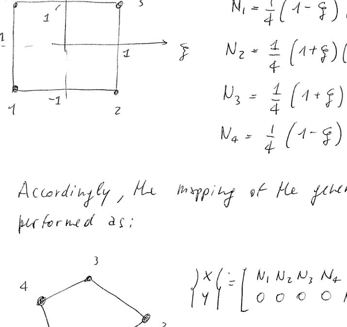
Figure 9.6: Bilinear reference element in computational coordinates \((\xi, \eta)\) with nodes at \((\pm 1, \pm 1)\)
\[N_1 = \frac{1}{4}(1-\xi)(1-\eta)\]
\[N_2 = \frac{1}{4}(1+\xi)(1-\eta)\]
\[N_3 = \frac{1}{4}(1+\xi)(1+\eta)\]
\[N_4 = \frac{1}{4}(1-\xi)(1+\eta)\]
Accordingly, the mapping of the generic element is performed as:
where \((x_i, y_i)\) are the coordinates of the i-th node in the physical domain. Note that \(N_i = N_i(\xi, \eta)\) so the relation above is indeed a transformation in the form \(\underline{x} = \underline{f}(\underline{\xi})\).
9.4 The Jacobian Transformation
It is now necessary to understand how to evaluate the derivatives of the shape functions, which are defined in \((\xi, \eta)\), with respect to the coordinates \((x, y)\), as required for the evaluation of the stiffness matrix.
\[\underline{\underline{K}} = \int_A t \, \underline{\underline{B}}^T \underline{\underline{C}} \underline{\underline{B}} \, dA\]
where \(\underline{\underline{B}} = \underline{\underline{D}} \underline{\underline{N}}\) and \(\underline{\varepsilon} = \underline{\underline{D}} \underline{u}\).
This operation can be conducted by observing that:
It is then clear that the diagonal elements provide a measure of the stretching of the element. More specifically, the ratio of the diagonal elements provides an indication of the stretching.
Rule of Thumb
As a rule of thumb, the element can properly work up to a stretching (aspect ratio) of \(\approx 10\). Higher values can lead to numerical issues.
Another interesting indication regarding the element shape is provided by the extra-diagonal terms, i.e. \(y_{,\xi}\) and \(x_{,\eta}\): they provide a measure of the distortion of the element. High values (of their ratio) indicate a severe distortion, which has to be avoided.
Another measure for checking the entity of the element deformation is given by \(\det \underline{\underline{J}}\). Indeed:
which is the ratio between the area of the infinitesimal element in the physical domain and in the computational one.
10. Numerical Integration
The isoparametric formulation leads to the necessity of integrating numerically the expression of the stiffness matrix (and distributed loads, if any).
Indeed a closed-form integration can be performed in simple cases only. When the element is generically distorted the only viable option is the numerical integration.
The expression of \(\underline{\underline{K}}\) was found as:
The Gauss-Legendre rule allows to integrate exactly a polynomial expression of order \(2N-1\), where \(N\) is the number of Gauss points.
This means that a two-point rule (\(N=2\)) allows for the exact integration of a cubic polynomial.
10.2 Choice of Number of Integration Points
How to choose the number of points?
Many points → accurate integration, but high cost to evaluate \(\underline{\underline{K}}\)
Few points → low cost to build \(\underline{\underline{K}}\) but possible inaccuracies
It is commonly defined:
1. Full Integration
An integration aimed at integrating exactly the reference element (an element not distorted). In the case of a bilinear membrane it would be \(N = 2\) (in order to integrate exactly a quadratic polynomial).
2. Reduced Integration
An integration with less points with respect to the full one.
A reduced integration, typically with one point less than a full integration, can be a good choice. It offers the advantage of requiring less operations and, in addition, the error associated with the relatively "poor" integration scheme tends to compensate the inherent overstiffness of a discrete model.
10.3 Hourglass Modes
When choosing the integration rule it is always necessary to consider issues of ill-conditioning of \(\underline{\underline{K}}\), numerical instabilities or hourglass phenomena.
These latter are spurious deformation modes made possible by a lack of integration points.
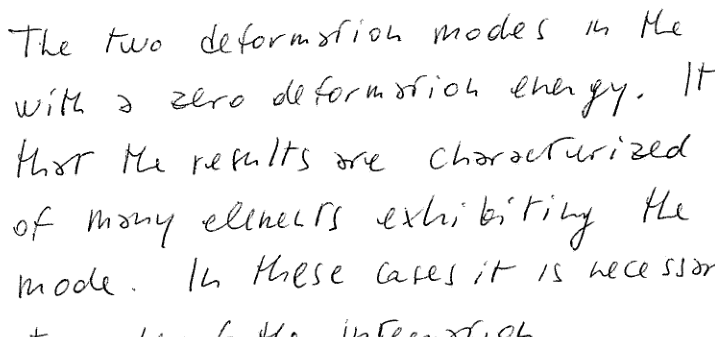
Figure 10.2: For a 2D element integrated with 1-point rule, hourglass modes (zero-energy deformation modes) become possible
The two deformation modes in the figure are possible with a zero deformation energy. It may happen that the results are characterized by the presence of many elements exhibiting the typical hourglass mode. In these cases it is necessary to increase the order of the integration.
11. Recovery of Stresses
In the linear static case the discrete problem is obtained in the form:
Recalling now that \(\underline{\underline{B}} = \underline{\underline{B}}(\xi, \eta)\) it is necessary to establish how to check the stress levels; in other words, which points \(\xi_i, \eta_i\) one should consider?
From a practical standpoint one may be interested in the outermost positions (the nodes) as they can be associated with the highest stress levels.
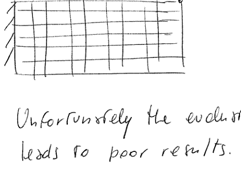
Figure 11.1: Cantilever beam with distributed load - the bending-induced stresses will be highest at the top and the bottom
Unfortunately the evaluation of stresses at the nodes leads to poor results. The quality of the stresses at the nodes is low.
On the contrary, the stresses are nicely captured in correspondence of:
Integration points
Barlow points (integration points of the rule of order \(N-1\), where \(N\) is the order of the rule considered for evaluating \(\underline{\underline{K}}\))
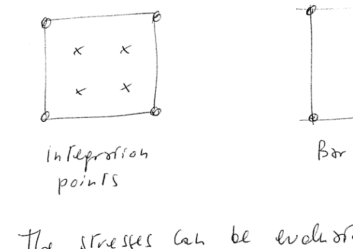
Figure 11.2: If a 2-point rule is considered: integration points (left, 2×2 arrangement) vs. Barlow point (right, single center point)
11.3 Stress Interpolation
The stresses can be evaluated in these points and extrapolated in any other point using a proper interpolation rule.
If considering the points of a 2-point interpolation rule:
The FEM can be seen as a special case of the method of Ritz. It follows that the same considerations apply in terms of convergence of the solution.
In this sense, for a displacement-based finite element model:
The Total potential energy \(\Pi\) is higher with respect to the exact case
The strain energy \(U\) is lower with respect to the exact case
The Total potential energy \(\Pi\) gets smaller and smaller when the mesh is progressively refined
The strain energy \(U\) increases as the mesh is refined
These conclusions hold if:
12.1 Elements Must Be Compatible
This means that compatibility should be guaranteed both:
Internally: The use of continuous shape functions, in this sense, automatically guarantees the internal compatibility
At the interface: With the surrounding elements. Nodal continuity is enforced as part of the assembly procedure.
Attention should be paid in the formulation of kinematic elements (such as Euler-Bernoulli beam elements) for which the continuity involves the function along with the first derivative (the rotations).
The continuity has to be guaranteed also at the frontier between adjacent edges of the elements. In this case a critical situation can be associated with the presence of curved edges.
12.2 Loads Must Be Applied Consistently (Conformal)
This means that any kind of distributed external load is reported at the nodes by projecting it over the shape functions of the element. In other words, the external work should be written as:
The integrals, entering the expression of \(\underline{F}\) and \(\underline{\underline{K}}\), should be evaluated exactly. This operation is possible, in general, only if the element is not distorted.
Final Remarks
Whenever the three previous requirements are not verified, it may happen that the total potential energy (and the strain energy) behaves differently from what expected.
In this sense, the model behaviour will be problem-dependent and inherently associated with the kind and degree of violation of the mentioned requirements.
For instance, a model with a few distorted elements does not fulfill the third requirement. However, if the distorted elements are few, it is very likely that they will not affect the global convergence behaviour of the entire structural model.